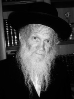

Pillar of Kindness
During the Shiva for R’ Shimon Friedman a”h, the family heard numerous stories about the chesed he did. Beis Moshiach is pleased to present more inspiring stories about a man who devoted himself to doing chesed, a Chassid whose Ahavas Yisroel and Ahavas Hashem knew no bounds.

R’ Shimon Friedman a”h, nicknamed “Shimon HaTzaddik,” passed away on Erev Shvii shel Pesach. That Shabbos (in Eretz Yisroel) we recited the first chapter of Pirkei Avos. The second Mishna says, “Shimon HaTzaddik was one of the remnants of the Men of the Great Assembly. He used to say: The world stands on three things – on [the study of] Torah, the service [of G-d], and deeds of kindness.”
R’ Shimon Friedman was known for his tremendous knowledge of Torah, Nigleh and Chassidus. Dozens of scholars along with simple people would go to hear his shiurim and farbrengens. His service of G-d, i.e. t’filla, was accompanied by copious tears and deep contemplation, and his entire life was devoted to acts of kindness, with every moment utilized to help others. Indeed, he was a true remnant of the great ones.
WHAT DOES R’ SHIMON HATZADDIK THINK?
As was related in the previous article about him, the sobriquet “Shimon HaTzaddik” is one he acquired in his youth. We heard additional details about this during the Shiva from R’ Mordechai Shmuel Ashkenazi, rav of Kfar Chabad, as follows.
R’ Ezriel Zelig Slonim, one of the directors of Kollel Chabad and a founder of Shikun Chabad in Yerushalayim, visited the Rebbe one year for Tishrei. In the yechidus he had prior to returning to Eretz Yisroel, R’ Slonim presented a number of questions to the Rebbe. One of them had to do with the new shul in Shikun Chabad. Some of the Chassidim wanted a later time for davening and some wanted to leave it at the usual time. The Rebbe asked him, “What does R’ Shimon HaTzaddik think about it?”
R’ Sholom Dovber Labkovsky related another occasion when the Rebbe referred to him in this way. Before Rosh HaShana, the Rebbe gave the secretariat a list of names of people to whom New Year’s greetings should be sent. Among the names of people from Eretz Yisroel the Rebbe wrote “Shimon HaTzaddik” and in parentheses he wrote “Friedman.”
SPECIAL CHILD
Relatives of his, who grew up with him in Yerushalayim, said that his greatness and righteousness were apparent in his youth:
“Until the age of eight, he acted like all other children, playing with children his age. At the age of eight, he underwent an enormous change and he transformed his behavior completely.
“At recess, when his classmates went outside to play, he continued learning in the classroom. In the evening, when he went home, he used every minute to help orphans and widows and needy families.
IT’S MY PLEASURE
As a young student in Yeshivas Eitz Chaim, R’ Shimon would spend time with the unfortunates of Yerushalayim, those people that others didn’t deign to look at. He helped them and cheered them up. One day, as he was walking down the street, surrounded by several nebechs, his mother caught sight of him. At first, she was embarrassed and she told him, “I’m ashamed of you. Look at these nebechs you walk around with!”
R’ Shimon replied, “Dear mother, I hereby give you all the reward that I deserve for helping these people, as long as you allow me to help them. This is my pleasure and what gives me energy.”
R’ Shimon did not only minister to the outcasts of society. His big heart was also open to widows and orphans and he provided for their needs.
When he was in yeshiva, his practice was that after every meal, when the students finished eating, he would go to the kitchen and ask the cook to pack up the leftovers. He said to her matter-of-factly, “What you give me, I give out to widows and orphans and needy families,” as though there was nothing special about what he did.
TOO GOODHEARTED TO BE A MELAMED
After he married, he lived in Shikun Chabad in Yerushalayim. This was when the neighborhood was first established and R’ Shimon did a lot to help. It was at this time that the first Chabad elementary school in Yerushalayim, called Toras Emes, was started. The improvised classrooms opened in the Chabad shul. Every morning, when the school day began, those who davened moved to a side room, leaving the main room for the pupils.
When the school experienced enormous financial difficulties, which made it fall behind in paying the salaries of the teachers, some of the classes remained without teachers. One morning, R’ Shimon showed up at one of these classes. He had heard about the problem and was not willing to have Jewish children remain without a teacher.
The children were happy to finally have someone come and teach them, except for one child who had gotten used to the perpetual recess. This child disturbed the class and the new teacher, R’ Friedman, yelled at him. After the class, R’ Friedman felt bad and asked the child’s forgiveness.
The child, who did not see what there was to apologize about, forgave him and also apologized for disturbing the lesson. Despite the student’s forgiveness, R’ Shimon asked for his forgiveness several times over the next few days.
When R’ Shimon saw that if he would continue teaching a situation could arise in which he might hurt another talmid, he left, though not before ascertaining that there was someone to replace him. The main thing was that the children should not stop learning.
TO ENABLE OTHERS TO DAVEN
R’ Shimon’s practice was to go from shul to shul every day and complete minyanim, bless people with the Priestly Blessing, and help the elderly and others with putting on t’fillin.
In Kfar Chabad they would relate that for years, R’ Shimon would lead a blind man to shul, putting t’fillin on him, and reading the words slowly so that the man could also daven.
DON’T WORRY, HE FORGIVES YOU
In one of the shuls, R’ Shimon heard someone speak derisively about a rav in the neighborhood. R’ Shimon couldn’t stand to hear any lashon ha’ra or rechilus and he asked the man to stop his derogatory talking. He recommended that the man ask forgiveness of the rav, but the man wasn’t interested and kept up his harangue. When R’ Shimon saw that he wasn’t being effective he left the shul so as not to transgress the prohibition of lashon ha’ra.
In the evening, he met the man again and told him, “I visited the rav you were speaking about. I did not reveal your identity to him, but I asked him to forgive you nonetheless. Don’t worry,” said R’ Shimon with a smile, “he forgives you wholeheartedly.”
WHOLEHEARTED FORGIVENESS
R’ Shimon did not take offense and forgave anyone who harmed him. One regularly heard him say, “I forgive anyone who ever harmed me, whether knowingly or unknowingly.”
One evening, he happened upon a commotion in which he heard people yelling at a woman, “Get of here! Don’t come into our neighborhood dressed immodestly!” The woman was not religious and she had mistakenly entered Meah Sh’arim. The screaming man attracted other people to the scene who joined in the shouting, “This isn’t your place, scram! Scum!”
The woman had had no intentions of offending the sensibilities of the residents. She began to quickly leave, making her way through the many bystanders.
One of the men, who wanted to teach her a lesson, continued to follow her and shout. R’ Shimon, who witnessed the scene, stopped him and said, “Your screaming is not effective. You are merely shaming her and displaying a great lack of Ahavas Yisroel.”
The zealot, who couldn’t stand to hear any critique of his actions, turned his ire upon R’ Shimon and slapped him in the face. R’ Shimon immediately began to run after the man who had run away in fear that R’ Shimon would hit him back, but all R’ Shimon did was say, “I forgive you wholeheartedly! I forgive you wholeheartedly!”
SO AS NOT TO CAUSE PAIN
A man who had fallen into terrible financial trouble shared his woes with R’ Shimon. “Could you lend me a large sum of money?” asked the man. “I will use it to invest in a deal that, with Hashem’s help, will earn me a profit and then I will repay you.”
R’ Shimon felt his pain and lent him the money and gave him a bracha that he be successful. Some time passed and the loan wasn’t repaid. R’ Shimon didn’t want to aggravate the man and he didn’t ask him for the money. Whenever he saw him, he acted as though he expected nothing.
As time went on, R’ Shimon heard that the deal had fallen through and had caused the man further losses. R’ Shimon’s attitude was that when Hashem would help the man recover, he would get his loan back.
Years went by and when R’ Shimon was invited to a certain wedding, his family was taken aback when he refused to attend saying, “Since the person who owes me money is likely to be there, when he sees me he will remember the loan he did not repay and will feel terrible. I prefer not to go.”
WHO WILL LEARN WITH ME NOW?
An older woman visited during the Shiva. She walked in quietly and sat down. The family, who was used to the nonstop stream of visitors, did not pay attention to her at first and continued talking to the other visitors.
At some point the woman sobbed, “I don’t know what to do now. Who will learn with my son?”
The women tried to calm her and heard the following story from her:
“My oldest son is handicapped, which makes it very difficult for him to leave the house. In addition to physical limitations, he suffers from loneliness. He is in the house all day, has no friends, and nobody with whom to spend all that free time. This caused him to fall into a depression.
“One day, an angel appeared at my home in the guise of R’ Shimon HaTzaddik, your father. He came to learn with my son. For many years now, almost daily he would climb three flights of stairs and would learn Chumash and Rashi with my son for an hour.
“The new friend and the consistency of their learning breathed new life into my son and changed him completely. He finally found a reason to wake up in the morning because, ‘Soon, R’ Shimon will be coming to learn with me!’
“Who will learn with him now?” concluded the woman in tears.
R’ SHIMON’S PRAYERS ARE POTENT
R’ Shimon’s prayers and blessings were particularly effective. R’ Avrohom Shtatland, who was R’ Shimon’s personal mashpia for years, had this to say:
“One night, I dreamed of the Rebbe. As I approached him, I said that I had a relationship with R’ Shimon. The Rebbe looked at me and said, ‘You know that his prayers have power.’
“When I later met with R’ Shimon, I told him about my dream. He humbly said that the Gerrer Rebbe, the ‘P’nei Menachem,’ told him the same thing.
“In addition to his brachos and warm way of relating to everyone, his family says that every night, after a busy day helping others, he would sit in the kitchen of his house and have many phone conversations with people all over the country. It may have been one of his many talmidim or a couple with shalom bayis problems. In each case, R’ Shimon tried to find the way to their hearts.”
REACHING OUT TO OTHERS ON THE BUS
Wherever R’ Shimon went, he took the opportunity to talk about Jewish topics or relay what the Rebbe said about Shleimus Ha’Am and Shleimus Ha’Aretz. It might have been a grocery store where he spoke to the shopkeeper or a bus trip when he asked the driver for permission to use the loudspeaker.
Many of the regular passengers on the 433 bus line from Yerushalayim to Kfar Chabad can tell of R’ Shimon’s conversations with them. One morning, a Chassid met R’ Shimon at the entrance to Kfar Chabad as he waited for a bus to take him home. The man had a car and he asked R’ Shimon where he was headed.
“I am on my way to Yerushalayim,” said R’ Shimon.
“Then come with me. That’s where I am going and I can take you to your house.”
R’ Shimon demurred, saying, “There are many soldiers who travel at this time on public transportation. I want to put t’fillin on with them and talk to them about Jewish topics.”
PUBLICIZING THE BESURAS HA’GEULA
In the middle of a turbulent farbrengen behind the Iron Curtain of Soviet Russia, at a time when the main avoda that the Rebbe demanded was chinuch of the next generation to Torah and mitzvos, the Rebbe Rayatz said to the great Chassid, R’ Itche der Masmid, “Listen Itche. If you are involved with the chinuch of Jewish children, then you are mine. Otherwise, you will be Itche, but not mine.”
R’ Shimon merited to “belong to the Rebbe.” He was fervently involved in the only remaining shlichus – preparing the world to greet Moshiach. He did not hide his belief in who he thought Moshiach is. He considered the sichos of the D’var Malchus most holy and whenever he learned them he was re-inspired.
“The Rebbe gave us the job to bring the Geula,” he would announce excitedly, and continue learning.
After this past Tishrei, when his son Menachem Mendel returned from 770, R’ Shimon told him that he envied his belief in Moshiach and the special chayus with which people return from 770 and the simple faith that the Rebbe is chai v’kayam.
***
May we immediately see the complete hisgalus of the Rebbe, at which time we will meet with R’ Shimon once again. Together, we will march towards Moshiach. When he finally sees the Rebbe for the first time, he will certainly recite the SheHechiyanu bracha with all of us, and together with all Jews we will joyously proclaim, “Yechi Adoneinu Moreinu V’Rabbeinu Melech HaMoshiach L’olam Va’ed!
Yisroel Cohen. "Pillar of Kindness." Beis Moshiach, no. 838 (June 22, 2012).